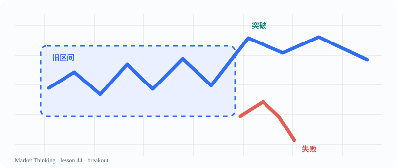

正在从独立课程文件夹调取 lesson.md…
10—16 岁 · Markdown-first curriculum
读懂价格，
读懂价格，
读懂世界。
Price Action 是课程主体。我们从K线、趋势、回调、突破、震荡区间与反转出发，再把同一套观察方法迁移到生活、历史、商业、体育和 AI 协作。
172总课数
62%PA + 决策核心
14代表课已填充
Featured visual / 视觉优先Lesson 044

Trading Range先看上下文，再看突破是否被接受。
Course directory · 课程目录
先找课，再开始学。
这里是完整的 172 课目录。按部分展开，点击任意课号即可加载对应的独立课程文件夹。
正在读取 data/lessons.json…
Price Action · 突破与失败
假突破
第44课 · 载入 Markdown 内容…
Single source of truth
每课是一个小型研究空间。
课程内容保存在独立目录中，图形和文字可以一起迭代。正式写作时，Markdown 负责内容，SVG / 图片负责视觉，顶层网页负责调取和导航。
lesson.md→visual.svg→top page